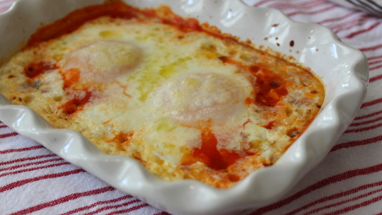

Chef John's Baked Eggs
Description
A quick and simple go-to recipe from Chef John of foodwishes.com.
Ingredients
- 2 large fresh eggs
- 1/3 cup marinara sauce
- red pepper flakes to taste
- salt and pepper to taste
- fresh herbs as desired
- 2 teaspoons olive oil
- 2 tablespoons cream
- a generous dusting of Parmigiano-Reggiano
- lots of toast
Steps
- Preheat oven to 400 degrees F (200 degrees C).
- Spoon marinara sauce into the bottom of a small baking dish, about 1/4 inch high. Sprinkle with red pepper flakes, salt, black pepper, and herbs. Make a narrow well in the center of the sauce for the eggs.
- Crack each egg into a ramekin, then pour into the baking dish over the marinara sauce.
- Sprinkle with Parmigiano-Reggiano cheese, olive oil , and cream. Season with salt and black pepper to taste.
- Bake in the preheated oven until yolks are just set, 10 to 12 minutes. Serve with toast.